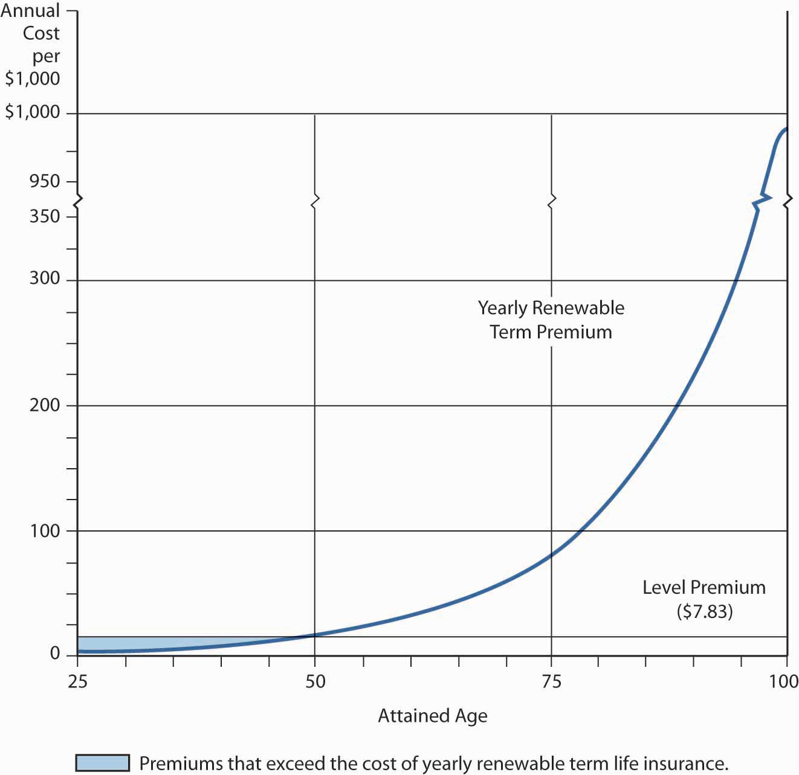
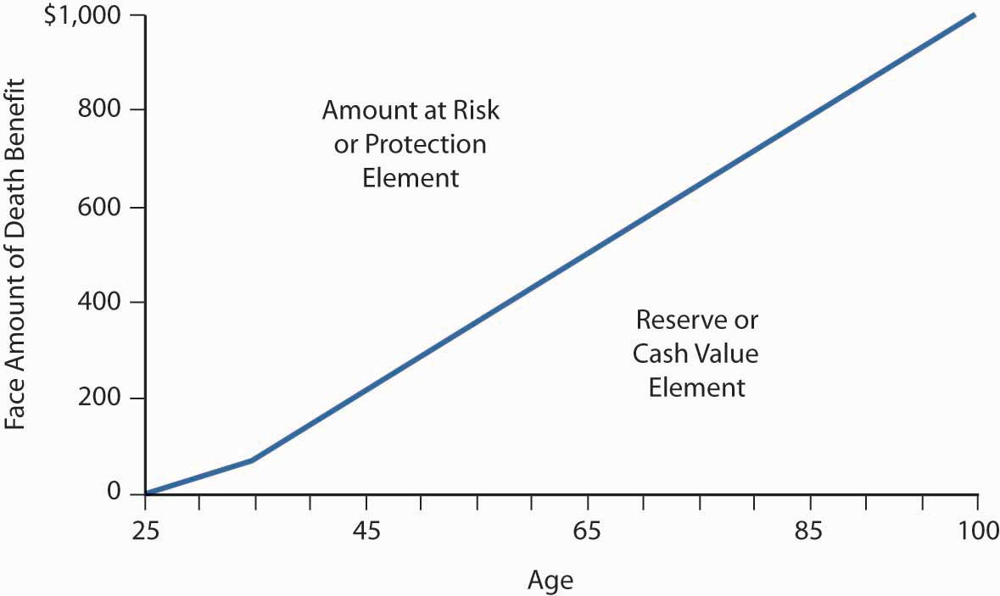

In this section we elaborate on the manner in which life insurance products are able to pay the promised benefit:
Life insurance, like other forms of insurance, is based on three concepts: pooling many exposures into a group, accumulating a fund through contributions (premiums) from the members of the group, and paying from this fund for the losses of those who die each year. That is, life insurance involves the group sharing of individual losses. The individual transfers the risk of dying to the pool by paying the premiums. To set premium rates, the insurer must be able to calculate the probability of death at various ages among its insureds, based on pooling. The simplest illustration of pooling is one-year term life insurance. If an insurer promises to pay $100,000 at the death of each insured who dies during the year, it must collect enough money to pay the claims. If past experience indicates that 0.1 percent of a group of young people will die during the year, one death may be expected for every 1,000 persons in the group. If a group of 300,000 is insured, 300 claims (300,000 × .001) are expected. Because each contract is for $100,000, the total expected amount of death claims is $30 million (300 claims × $100,000). To collect enough premiums to cover mortality costs (the cost of claims), the insurer must collect $100 per policyowner ($30 million in claims / 300,000 policyowners).
In addition to covering mortality costs, a life insurance premium must reflect several adjustments. First, the premium is reduced to recognize that the insurer expects to earn investment income on premiums paid in advance. In this manner, most of an insurer’s investment income benefits consumers. Second, the premium is increased to cover the insurer’s marketing and administrative expenses. Taxes levied on the insurer must also be recovered. In calculating premiums, an actuary usually increases the premium to cover the insurer’s risk and expected profits. Risk charges cover any deviations above the predicted level of losses and expenses. The major premium elementsAdjustments made in life insurance rates for items such as investment income, marketing/administrative costs, taxes, and actuarial risks. for term life insurance and the actual prediction of deaths and the estimation of other premium elements are complicated actuarial processes (see Chapter 7 "Insurance Operations").
The mortality curve discussed in Chapter 7 "Insurance Operations" and Chapter 17 "Life Cycle Financial Risks" also shows why life insurance for a term of one year costs relatively little for young people. The probability that a death benefit payment will be made during that year is very low. The mortality curve also indicates why the cost of yearly renewable term life insuranceTerm life insurance purchased on a year-by-year basis., purchased on a year-by-year basis, becomes prohibitive for most people’s budgets beyond the middle years. The theory of insurance is that the losses of the few can be paid for by relatively small contributions from the many. If, however, a large percentage of those in the group suffer losses (say, because all members of the group are old), the burden on one’s budget becomes too great, substantial adverse selection is experienced, and the insurance mechanism fails.
The mortality curve shows that yearly renewable term life insurance, where premiums increase each year as mortality increases, becomes prohibitively expensive at advanced ages. For example, the mortality table shows a mortality rate of 0.06419 for a male age seventy-five. Thus, just the mortality element of the annual premium for a $100,000 yearly renewable term life insurance policy would be $6,419 (0.06419 × $100,000). At age ninety, ignoring other premium elements and adverse selection, the mortality cost would be $22,177 (0.22177 × −$100,000). From a budget perspective, this high cost, coupled with adverse selection, can leave the insurer with a group of insureds whose mortality is even higher than would be anticipated in the absence of adverse selection. Healthy people tend to drop the insurance, while unhealthy people try to pay premiums because they think their beneficiaries may soon have a claim. This behavior is built into renewal rates on term insurance, resulting in renewal rates that rise substantially above rates for new term insurance for healthy people of the same age. A system of spreading the cost for life insurance protection, over a long period or for the entire life span, without a rise in premiums, is essential for most individuals. This is the function of level-premium life insurance.
A level premiumIn life insurance, a premium that remains constant throughout the premium-paying period instead of rising from year to year. remains constant throughout the premium-paying period, instead of rising from year to year. Mathematically, the level premium is the amount of the constant periodic payment over a specified period (ending before the specified date in the event of death); it is equivalent to a hypothetical single premium that could be paid at the beginning of the contract, discounting for interest and mortality. The hypothetical single premium at the beginning can be thought of as similar to a mortgage that is paid for by periodic level premiums.
As Figure 19.2 "Yearly Renewable Term Premium and Level Premium for Ordinary Life (Issued at Age Twenty-Five)" shows, the level premium for an ordinary (whole) life policy (which provides lifetime protection) is issued at age twenty-five in the illustration and is greater during the early years than are the premiums for a yearly renewable term policy for the same period. The excess (see the shaded area between age twenty-five and a little before age fifty in Figure 19.2 "Yearly Renewable Term Premium and Level Premium for Ordinary Life (Issued at Age Twenty-Five)") and its investment earnings are available to help pay claims as they occur. This accumulation of funds, combined with a decreasing amount of true insurance protection (which is the net amount at risk to the insurance mechanism), makes possible a premium that remains level even though the probability of death rises as the insured grows older. In later years, the true cost of insurance protection (the probability of death at a particular age times the decreased amount of protection) is paid for by the level premium plus a portion of the investment earnings produced by the policy’s cash value. In summary, the level premium is higher than necessary to pay claims and other expenses during the early years of the contract, but less than the cost of protection equal to the total death benefit during the later years. The concept of a level premium is basic to an understanding of financing death benefits at advanced ages.
The accumulation of funds is a mathematical side effect of leveling the premium to accommodate consumers’ budgets. Beginning in the 1950s, however, insurers began to refer to the accumulated funds of level premium life insurance policies as cash valueAccumulated funds of level premium life insurance policies as that can be utilized to meet various savings needs. that could meet various savings needs. Today, the payment of premiums greater than the amount required to pay for a yearly renewable term policy often is motivated, at least in the minds of consumers, by the objective of creating savings or investment funds.
Figure 19.2 Yearly Renewable Term Premium and Level Premium for Ordinary Life (Issued at Age Twenty-Five)
Based on nonsmoker rates for a $50,000 policy with a selected company.
From an economic standpoint, the level premium plan does two things. First, the insurer offers an installment payment plan with equal payments over time. Second, the level premium policies are made up of two elements: protection and investment.
As discussed, although the periodic premium payments exceed death benefits and other expenses for an insured group during the early years of the policy, they fall short during later years (see Figure 19.2 "Yearly Renewable Term Premium and Level Premium for Ordinary Life (Issued at Age Twenty-Five)"); consequently, the insurer accumulates a reserveIn life insurance, funds accumulated to offset the deficiency of periodic premium payments falling short of providing promised death benefits in later years of a policy. to offset this deficiency. The insurer’s reserve is similar in amount, but not identical, to the sum of cash values for the insured group. The reserve is a liability on the insurer’s balance sheet, representing the insurer’s obligation and reflecting the extent to which future premiums and the insurer’s assumed investment income will not be sufficient to cover the present value of future claims on a policy. At any point, the present value of the reserve fund, future investment earnings, and future premiums are sufficient to pay the present value of all future death claims for a group of insureds. When an insured dies, the insurer is obligated to pay the beneficiary the face amount (death benefit) of the policy. Part of this payment is an amount equal to the reserve.
The difference between the reserve at any point in time and the face amount of the policy is known as the net amount at riskFor the insurer, the difference between the funding reserve at any point in time and the face amount of the policy. for the insurer and as the protection elementFor the insured, the difference between the funding reserve at any point in time and the face amount of the policy. for the insured. As Figure 19.2 "Yearly Renewable Term Premium and Level Premium for Ordinary Life (Issued at Age Twenty-Five)" illustrates, this element declines each year because the reserve (investment or cash value) increases. The protection/net-amount-at-risk element is analogous to decreasing term insurance. All level premium life policies have a combination of cash value and protection.
The amount at risk for the insurer (that is, the protection element) decreases as the cash value element increases with age; thus, less true insurance (protection) is purchased each year. This decreasing amount of insurance is one of the reasons why the annual cost of pure insurance (that is, the protection element) to the insurer is less than the sum of the level premium plus investment earnings, even at advanced ages when mortality rates significantly exceed the premium per $1,000 of death benefit. Over time, the growing amount of investment earnings (due to increasing cash value) more than offsets the inadequacy of the level premium. The periodic addition of part of these investment earnings to cash value explains why the cash value in the policy continues to grow throughout the life of the contract (see Figure 19.3 "Proportion of Protection and Cash Value in Ordinary Life Contract (Issued to a Male Age Twenty-Five)").
Figure 19.3 Proportion of Protection and Cash Value in Ordinary Life Contract (Issued to a Male Age Twenty-Five)
This graph shows the cash value (investment) figures for a selected ordinary life policy. The insurer’s reserve would be slightly higher than the cash value in the early contract years.
From an insurer’s perspective, the reserve is a liability that will have to be paid when the insured either dies or surrenders the policy. The separation of a whole life policy into protection and investment elements is an economic or personal finance concept rather than an actuarial one. Actuaries deal with large groups of insureds rather than individual policies; they look at an individual policy as an indivisible contract.
The cash value is classified as an asset on the policyholder’s personal balance sheet because it is the policy owner’s money. There are three ways to realize the cash value:
In this section you studied mechanisms that allow for the provision of life insurance: